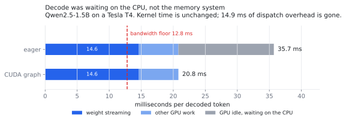
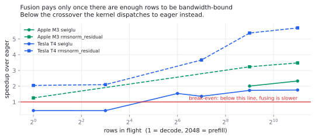

Most LLM decode optimisation assumes the memory system is the wall. On a Tesla T4 it was not: the GPU sat idle for over half of every token while the CPU issued about six thousand operations. Replaying a captured CUDA graph was worth more than every fused kernel combined.
Pick a device and a model. The arithmetic below is the same as
hag.roofline, with constants measured on the hardware named. Devices
marked measured were benchmarked; the others use
datasheet figures and are labelled so.
Slide dispatches to zero: that is a perfectly captured CUDA graph. Slide precision to int4: that is quantisation. Whichever bar shrinks more is where your next week of work belongs, and for the measured configuration it was not the one most people reach for first.


The notebook runs the whole pipeline on a free T4 in about ten minutes and writes every number on this page: correctness, the op sweep, the profile, the end-to-end benchmark and the CUDA graph capture. Nothing here is a figure you have to take on trust.
Prefer Kaggle: its GPU quota is larger and the machine is quieter. The same benchmark measured a standard deviation of 0.53 tok/s there against 3.68 on Colab, which decided whether an effect resolved at all.